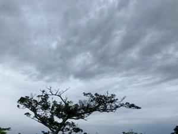
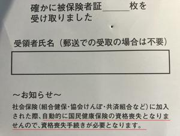
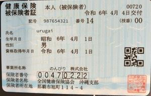

うるがいの話 ある日
最新: 社会保険カード【うるがいの話 ある日】とは 一日だけのプログです
『うるがいの話』の最新一日だけのプログで、通信料が少なく経済的だ。カニの画像をクリックすると全ての日付が載る『うるがいの話』サイトを表示します
|
|
【うるがいの話】 うるがい(ｳﾙｶﾞｲ urugai)とは、『もずくがに』の名前でとても大きくなります。 |
|---|---|
|
|
【カミマヤーの話】 猫のことを方言でマヤーといいます。カミマヤー（kamimayaa）とは、神の猫のことです。 |
|
【たながぁの音楽】 たながぁ（ﾀﾅｶﾞｰ tanagaa）とは手長えびのことで、何種類かあり大きいのは車 エビぐらいになります。 |

|
【ぶながぁの話】 ぶながぁ(ﾌﾞﾅｶﾞｰ bunagaa)とは、赤い髪の毛、赤い身体、そして身長は１ｍ２０ｃｍ ぐらい、川の蟹を食べているの目撃された。場所は沖縄県国頭郡大宜味村のと ある村僕の隣近所に住んでいる爺さんから、聞いた話です。 |
|
|
【ギーマの話】 ギーマ(giima)とは、山原の里山に咲くスズランに似た、 花を付けます。実は食べられます、 気が付くと口の周りが紫になっています。 |
2024年04月25日 (木）社会保険カード
15:03
  
オカさん
４月２４日（水）に心電図をとり、正常であることを確認しました。診察は
国民健康保険を利用しています、社会保険カードは返却します。
（国民健康保険の継続利用は、那覇市の国民健康保険課へ確認済です）
ご迷惑をおかけしました。
リモート端末を返却するときに、『社会保険カードが届いていますが、持っ
て帰りますか？』と言われたので国民健康保険を、そのまま利用しますから
いいですよ、女性職員に話したのに先週の１９日（金曜日）に３７０円のレ
ターパックライトで社会保険カードが、郵送されてきた。今日、速達５２０
円のレターパックで前述を紙に書き、オカさんへ送り返した。社会保険の手
続きを行った時に、ヨメの社会保険もと書類作成したはずだが、ヨメの社会
保険カードは作成されていなかった！。
３月に国民健康保険が届いたとき、社会保険に加入しても自動的に国民健康
保険が資格喪失にならない、資格喪失の手続きをセヨと知らせていた。ホー
自動になっていたら、大変だっただろうと今思う。
通院している内科の主治医は、体調不良で代わりにタニ先生が見てくれた。
問診のとき、主治医が休みなので心電図を延期しますか？と言われたが、い
いえ是非行って下さいと伝える。タニ先生には４月のとんでもない仕事の話
を実名で語る。大変でしたね、再発する人もいるので注意が必要ですと言わ
れる。薬をもらうため、薬局で待っていると薬剤師（知っている人）が、私
のおくすり手帳を丹念に時間をかけて見ている。ん！、そこまでみるとは病
歴がわかるベ。今回の薬は、高血圧の一種類なのに。
１４時５５分 ビットコインの総資産 ￥２８、９８９（↓１、０８２）